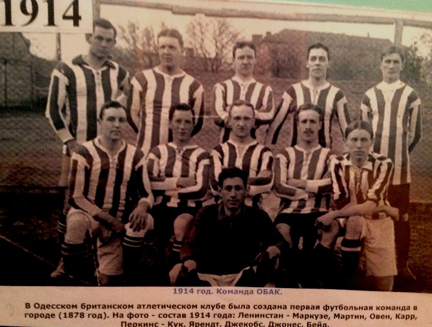

Klub sepak bola anak-anak dan remaja "Athletic" adalah organisasi publik yang tujuan utamanya adalah menciptakan kondisi yang menguntungkan bagi kesehatan moral dan fisik anak-anak melalui sepakbola, organisasi kompetisi, olahraga dan pendidikan patriotik anak muda, pelatihan pemain muda di cadangan Tim Nasional Ukraina, tim pemuda Ukraina dan tim-tim master.
Pada tahun 1878, Klub Atletik Inggris Odessa (OBAK) didirikan, organisasi olahraga pertama di Ukraina yang memiliki bagian sepakbola. Mulai saat ini dimulai sejarah sepak bola Odessa. Memori dan pengalaman para pendahulu kami memberi kami kekuatan!
Seorang atlet bukan hanya seorang atlet, ia adalah orang yang senantiasa berjuang (dari bahasa Yunani lainnya: berjuang keras) untuk meraih kemenangan, peningkatan tidak hanya kualitas fisik tetapi juga kualitas moral.
Klub lambang: Sebuah perisai dengan simbol-simbol Odessa dalam bentuk mercusuar dan jangkar, mencerminkan cinta kota asli dan simbol-simbolnya.
Warna klub: Putih-merah. Putih adalah warna ilahi. Simbol cahaya, kemurnian dan kebenaran. Warna kegembiraan dan perayaan. Warna merah - melambangkan cinta, kekuatan, api, dan perjuangan yang penuh gairah.
Warna klub: T-shirt putih dan merah. Warna putih adalah warna ilahi, simbol cahaya, kemurnian dan kebenaran, warna sukacita dan perayaan. Warna merah - melambangkan cinta, kekuatan, api, dan perjuangan yang penuh gairah.
Celana pendek dan legging berwarna hitam. Warna hitam melambangkan Laut Hitam, daya tarik utama kota kami.